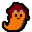
Voltimand Land
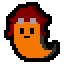
This is the project page for Voltimand Land.
I am basically using it as a devblog right now while I try to learn GM2.
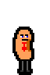
Background
Voltimand Land 3 was originally in development on the godawful Clickteam Fusion 2.5 engine, under the working name "Donjon of Doubt".
I scrapped the engine because as the project scope became larger, it was quickly apparent that the CF2.5 engine could not support the range of operations I wanted it to do without blowing up into an unmaintainable mess.
Drag-and-drop programming is fun, but when the skeleton code for you game becomes a 500-line spreadsheet, it's time to take a step back and ask yourself which is worse: actually writing the game using standard coding practices, or becoming a secretary.
I chose the former and decided to scrap the CF2.5 engine in favor of the GameMaker 2 engine. It has extensive documentation, a working language, and all the features I need for a 2D platformer (which, granted, is not that many).
The game itself was developed off and on -- mostly off -- during my time in university.
It is painful to scrap the work I've put in so far only to start over again, but it will definitely be worth it in the long run.
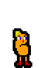
Features
The game is a puzzle-platformer with pseudo-metroidvania elements.
It is nonlinear and features 24 distinct stages which have numerous secrets and objectives.
Most of these stages need to be revisited more than once in order to collect all the treasure they contain.
Additionally, the player can fight bosses scattered throughout the world to obtain upgrades which increase mobility and attack power.
These upgrades can allow the player to reach new area which were previously inaccessible.
There are a total of 64 treasures to obtain in the world, and the game contains two distinct endings (a good one, and a better one).
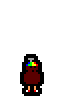
Media
Since the project is currently being ported from CF2.5 to GM2, all this media is out-of-date.
It's here anyway because it's still media, I guess.
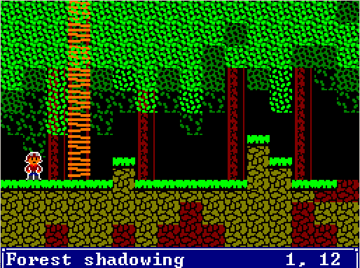
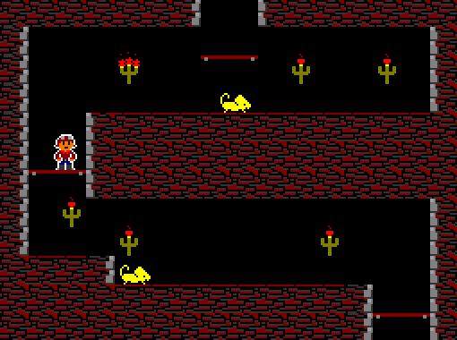
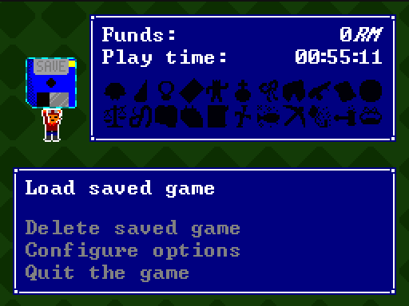
The original design of the game was inspired by
La-Mulana, a game about exploring a massive mazelike series of ruins.
La-Mulana itself was inspired by an MSX game
The Maze of Galious, a game about exploring a massive ruinlike series of mazes.
As such, the original design of Voltimand Land featured an extremely floaty, almost uncontrollable jumping mechanic.
While this mechanic allowed for interesting level design, I ended up settling on a much more controllable style of movement as gameplay quickly becomes frustrating with that style of controls.
You can see in the gifs above that demonstrate the absurd level of floatiness not only in the jumping but also just in moving left and right.
Click the image above to see the actual resolution the game runs at. It runs a 256x192 pixel screen blown up to 1024x768, and uses the classic MSX color palette.
Later in development, I added many more colors as the MSX palette began to get hard to look at with all the bright, high-contrast colors.
It was also around this time that I decided that emulating the mechanics and controls from games like La-Mulana would be a mistake in the long run.
I settled on mechanics similar to that of
Wario Land 3, one of
the best games on GameBoy Color.
Thus, the little "lunge with sword" attack was dropped and replaced with a charge mechanic.
The jumping and walking controls were also tightened up, and together this made an altogether much more enjoyable experience.
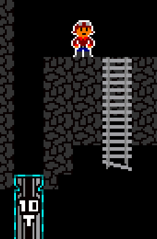
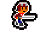
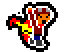
{kind=link}